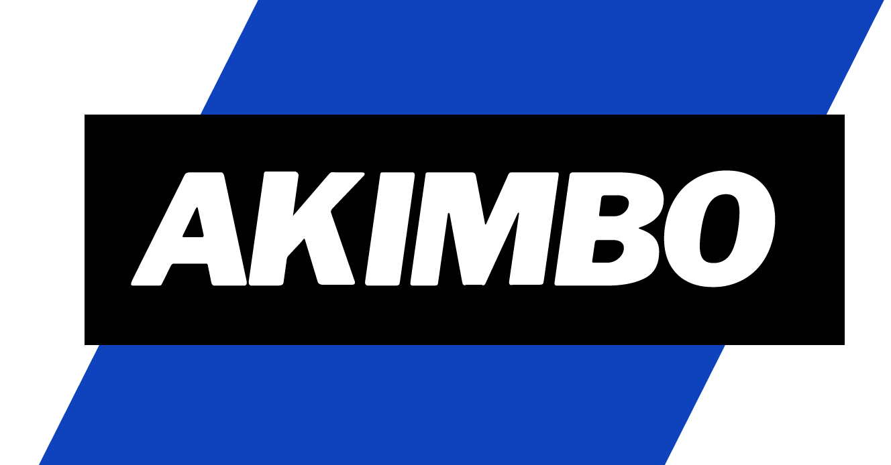
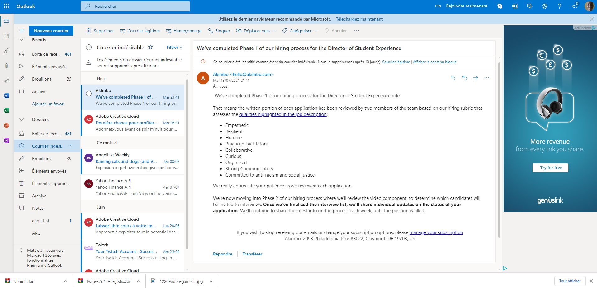

Why Microsoft blocks still AKIMBO’s emails?


Who read me knows that I am a podcasts listener and this article about equity podcast I have published hours before as well as this one below can prove this fact.
AKIMBO is a very worth listening podcast by Seth Godin but it’s also the name and brand of a learning B corp doing works that matter for helping people learn in groups by helping each other and organized by great coaches who are not mentors neither advisors but people who facilitate interaction and connection. Akimbo runs several workshops that you can find here but the point of this article is to rant against people from Microsoft who are in charge of Outlook Ecosystems because last week I saw that mails coming from Akimbo were directly sent to the junk folder. When I first constated this fact and marked the emails from Akimbo as mails that I would love to read from Akimbo but week after, today, they still are in junks as you can see here

Why once I marked the emails as not spammy emails, they still keep being classified as that.
Maybe I was wrong when I said that Google’s algorithm update killed Squidoo with this article below
but for this abnormal behavior of outlook blocking Akimbo’s emails, I am also thinking that Microsoft has something to do with it.
I Don’t know what relationship Microsoft, which I just heard right now buying the startup RiskIQ for 500M by listening Alex says it in Equitypod, has with Akimbo but I want Microsoft to stop blocking Akimbo’s email sent to me.
Thank you